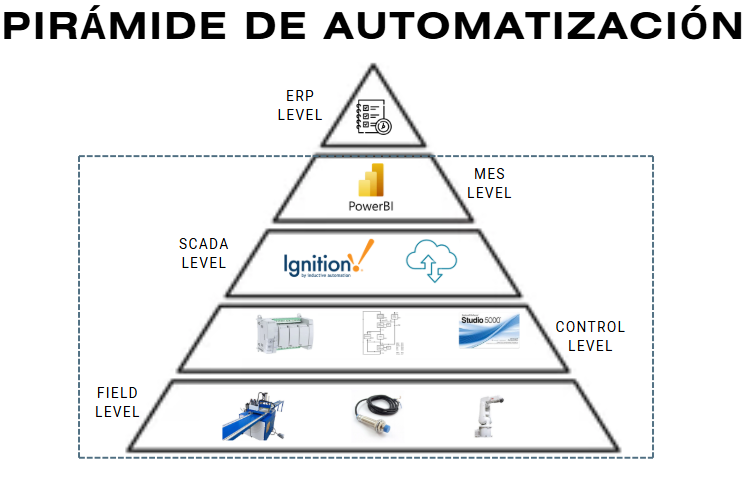
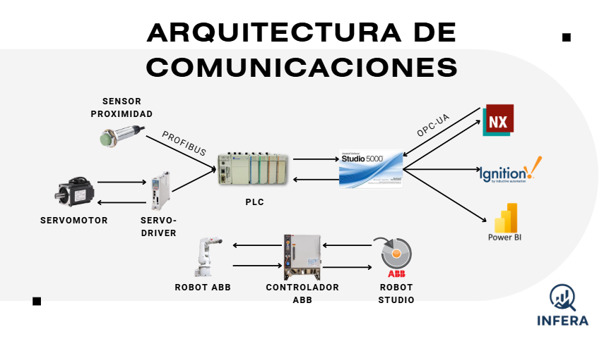

Piramide de Automatización
En el nivel de campo tenemos la cortadora automática, que cuenta con una serie de motores que activan las cuchillas, así como sensores de proximidad que permiten determinar el rango de corte que debe realizar la máquina según el proceso, ya sea sin fin corona, helicoidal o cónico. A su vez, tenemos un robot de 6 grados de libertad encargado de colocar la materia prima para que la cortadora realice su trabajo y también de organizar la materia prima ya cortada.
En el nivel de control, contamos con un PLC que gestiona esta máquina cortadora con ayuda de un diagrama Grafcet. Estos sistemas pueden integrarse con Ignition, una plataforma para desarrollar interfaces HMI con capacidad IoT. A su vez, se planea conectar estos sistemas con Power BI para implementar un nivel MES que ayude a los gerentes a gestionar mejor la producción.
Este proyecto abarca todos los niveles de la pirámide de automatización, excepto el nivel ERP, que corresponde a la planificación de la demanda y está más relacionado con el estudio del cliente y las estrategias de fidelización.
Arquitectura de Comunicaciones
Comenzando por el nivel de campo se tienen que los servomotores y los sensores de proximidad que están presentes en la máquina cortadora. Estos se controlan a través del PLC mediante el protocolo PROFIBUS.
El PLC se programa con Studio 5000 y envía datos clave relacionados con las señales de los sensores y de los servomotores. Tanto Studio 5000 como Ignition y Power BI cumplen funciones específicas dentro del sistema. El NX funciona como gemelo digital, Ignition actúa como plataforma HMI y Power BI se utiliza para el nivel MES. Estos sistemas se comunican mediante el protocolo OPC UA.
En el caso del robot de ABB, la comunicación es diferente, ya que utiliza su propio controlador para enviar y recibir señales. Este controlador se programa con el software RobotStudio, donde también se pueden visualizar las características del robot, sus poses y otros parámetros relevantes.
Diagrama de instrumentación
El siguiente diagrama de instrumentación muestra los enlaces necesarios para la conexión interna de la cortadora. Incluye sensores encargados de detectar el material transportado por la banda, permitiendo que la señal llegue al PLC y genere la retroalimentación necesaria para detener el movimiento de las bandas.
En cuanto a los motores que accionan las mordazas, una vez completado el cierre de estas, se habilita el corte mediante la activación del disco. Posteriormente, la cortadora desciende en el eje Z para realizar el corte correspondiente. Finalmente, se procede a la apertura de las mordazas y al movimiento de la segunda banda para despachar el material ya cortado.